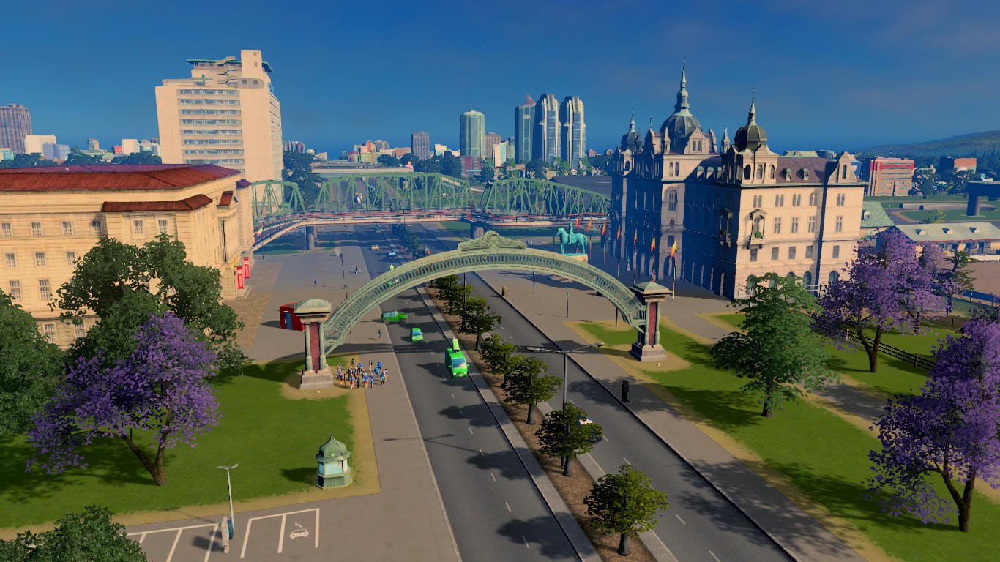

Um pouco da história de Virtualha
O município de Virtualha foi fundado em Fevereiro de 2022 com a chegada dos primeiros habitantes que se estabeleceram à margem esquerda da rodovia Don Vito Corleone, dando início ao primeiro povoado, atual centro do município, e criando as primeiras estruturas básicas de desenvolvimento social e urbano.
O município é banhado pelos oceanos de Antares a leste, e Adelbaran a oeste. E conta com rica diversidade hidrográfica devido às formações de lagos e portos naturais ao longe de suas duas costas. Ao decorrer de seus litorais possui diversas áreas de formação de praias e balneários naturais. Faz divisa ao norte com o município de Springfield, e ao sul com o município de San Vegas. Mantém com estes dois vizinhos fortes ligações comerciais que se propagam através da malha rodoviária e ferroviária. Não menos importante também faz ligação ferroviária através da antiga estrada de ferro com o município de Verville, a Noroeste, sendo essa outra importante rota de escoamento da produção industrial de Virtualha.
Logo nos primeiros anos de desenvolvimento da cidade foi iniciada pelos pioneiros a obra de urbanização litorânea dos bairros de Navegantes e Praia Grande, sendo que ambos tiveram seu plano de desenvolvimento influenciado pela presença do histórico Forte Furio Giunta, sendo este um forte marítimo remanescente do período colonial. Hoje o entreposto destes dois importantes bairros abriga a principal estrutura de rede hoteleira e casas noturnas de Virtualha em dois novos bairros originados da antiga região central do bairro de Navegantes, são eles: Hotelaria e Meia Praia.
Explorando o forte pontecial florestal renovável da região, logo se estabeleceu próximo a região central o bairro do Bosque, que se tornou um importante agregador urbano de residências sustentáveis, característica essa que foi reconhecida e recompensada pela comunidade com a fundação do Parque Municipal do Bosque, um importante local de exercício da cultura e cidadania no município. O bairro do bosque foi fundamental para a instalação das primeiras atividades industriais de extrativismo e beneficiamento de madeira na região, com o crescimento desta atividade logo se originou o bairro Madeireira, e em função do rápido desenvolvimento do setor foi construída a primeira estrutura de viadutos que transpôs os limites da Rodovia Vito Corleone em direção as terras da margem oeste.
Tal transposição anos mais tarde foi o vetor da primeira grande expansão urbana de Virtualha, gerando então os bairros de Harmonia e Planalto, e também trouxe viabilidade para a criação do primeiro complexo sanitário do município. Em função de tamanho crescimento, sempre atraindo imigrantes e em pleno crescimento populacional estabeleceram-se na zona oeste os primeiros dois grandes distritos industriais de Virtualha, a Zona Rural e a Zona Florestal, que juntas são responsáveis por grande parte da produção Industrial do município.
Logo na sequência, anexo a Zona Rural às margens dos lagos profundos se estabeleceu a primeira colônia de pescadores, que hoje abriga também uma pequena comunidade urbana que além da atividade pesqueira fornece mão de obra as industriais de agricultura e pecuária.
A rápida ascensão comercial e industrial do município ocasionou por volta dos anos de 2030 um grande movimento migratório em busca de oportunidades, originando o charmoso Bairro de Imigrantes na zona leste, e como produto deste crescimento surgiram os Bairros Industriários e Sítio do Carvalho, sendo o primeiro de moradias de alta valorização imobiliária, e o segundo constitui uma grande área de sítios e casas de campo. Ainda dentro do bairro de Imigrantes está localizado o distrito do Centro Histórico, importante local de atividade turística influenciado pela beleza da arquitetura tradicional européia.
Diante de tamanho sucesso e invejável crescimento econômico por volta dos anos 2040 a cidade deu um passo a frente e liberou mediante estudos de impacto ambiental as áreas para exploração mineral e petrolífera. Até os dias de hoje essa iniciativa é controversa perante a opinião de parte da população de Virtualha, mas é fato que o Desenvolvimento de tais atividades industriais foi o possibilitador da efetiva autonomia industrial e comercial do município, colocando-o em papel de destaque regional.
Nos dias de hoje o município segue em franca expansão, conta com uma complexa e moderna rede de transporte público gratuito, comemorou recentemente a inauguração do imponente complexo universitário, e abriga na grande zona urbana municipal, ao centro do moderno bairro de Pinheiros um importante Pólo Digital de desenvolvimento de tecnologia.
Nós da administração pública acreditamos que existe muito mais a ser contado sobre a história de Virtualha, mas sabemos que os feitos e as conquistas são antes de tudo eternizadas pela memória da sociedade, e encerramos este breve compilado histórico deixando a certeza de que no futuro muito mais será contado nestas páginas.

Arco da Cidade
Portal histórico no principal acesso de Virtualha

Centro Histórico
Rua do Velho Mercado construída pelo imigrantes de Virtualha

Forte Furio
Forte marítmo do remanescente do periodo colonial

Urbanização em Navegantes
Panorâmica de navegantes com o Oceano de Antares ao fundo

Parque Municipal
Fonte e Anfiteatro no maior parque urbano de Virtualha

Praia de Navegantes
Uma vista belíssima da orla marítma do tradicional bairro.

Centro Administrativo
Prefeitura de Virtualha e Câmara Municipal